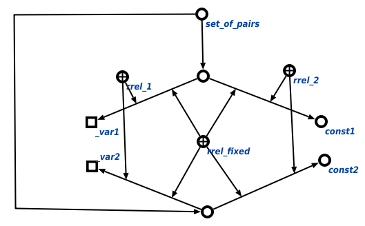

Задачей scp-программы генерации пары соответствия является генерация пары соответствия между узлом из графа условия и узлом из шаблона для генерации. Первым входным параметром данной scp-программы является узел из шаблона генерации, вторым входным параметром является узел из графа условия, третьим входным параметром является множество связок соответствия. В ходе выполнения программы явно указывается связь со следующими ключевыми узлами: порядковыми атрибутами 1' и 2' , уточняющими очерёдность вхождения элементов в пару соответствия, а также атрибутом фиксированный элемент'. Ниже представлены результаты выполнения процедуры:
